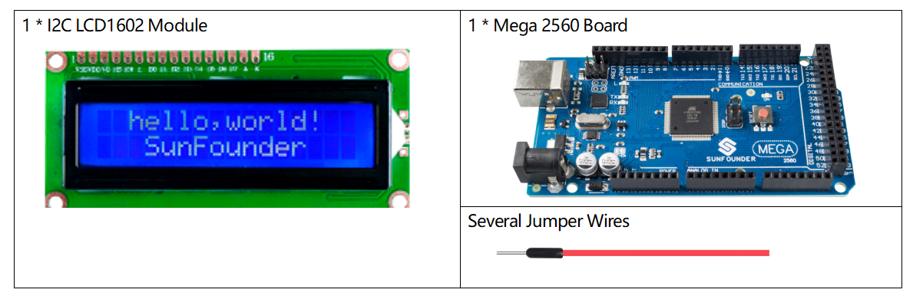
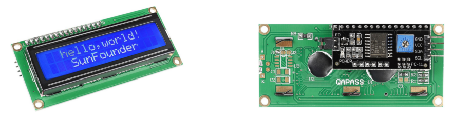
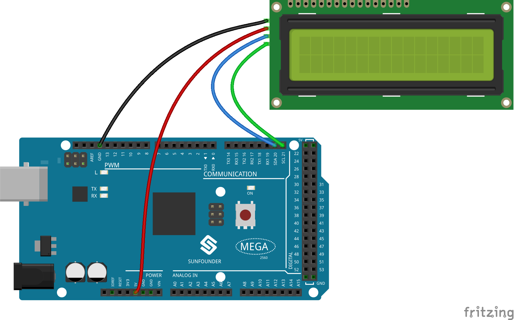
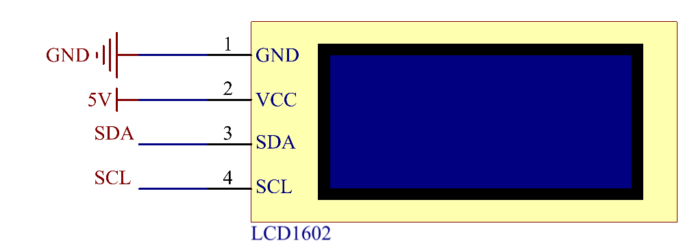

2.9 I2C LCD1602-Modul¶
Überblick¶
In dieser Lektion lernen Sie LCD1602. Flüssigkristallanzeige vom Typ LCD1602 oder 1602, eine Art Punktmatrixmodul zur Anzeige von Buchstaben, Zahlen, Zeichen usw.
Erforderliche Komponenten¶
Komponenteneinführung¶
Es besteht aus 5x7- oder 5x11-Punktmatrixpositionen. Jede Position kann ein Zeichen anzeigen. Es gibt einen Punktabstand zwischen zwei Zeichen und ein Leerzeichen zwischen den Zeilen, wodurch Zeichen und Zeilen getrennt werden. Die Zahl 1602 bedeutet, dass auf dem Display 2 Zeilen mit jeweils 16 Zeichen angezeigt werden können.
Wie wir alle wissen, bereichern LCD und einige andere Displays die Mensch-Maschine-Interaktion erheblich, weisen jedoch eine gemeinsame Schwäche auf. Wenn sie mit einem Controller verbunden sind, werden mehrere E / A des Controllers belegt, der nicht so viele äußere Ports hat. Es schränkt auch andere Funktionen der Steuerung ein. Daher wurde LCD1602 mit einem I2C-Bus entwickelt, um das Problem zu lösen.
I2C-Kommunikation¶
Der I2C-Bus (Inter-Integrated Circuit) ist ein sehr beliebter und leistungsstarker Bus, der für die Kommunikation zwischen einem oder mehreren Master-Geräten und einzelnen oder mehreren Slave-Geräten verwendet wird. Der I2C-Hauptcontroller kann zur Steuerung des E / A-Expanders, verschiedener Sensoren, des EEPROM, des ADC / DAC usw. verwendet werden. Alle diese werden nur von den beiden Pins des Hosts gesteuert, der seriellen Datenleitung (SDA) und der seriellen Taktleitung (SCL).
Fritzing Circuit¶
In diesem Beispiel wird der erste Pin GND des LCD1602 mit GND verbunden, der zweite Pin VCC mit 5 V, der dritte Pin SDA mit dem Pin SDA 20 und der vierte Pin SCL mit dem Pin SCL 21.
Schematische Darstellung¶
Bemerkung
SDA und SCL der Mega2560-Karte sind die Pins 20 und 21.
Code¶
Die Bibliotheken Wire.h und LiquidCrystal_I2C.h werden in diesen Codes verwendet. Wire.h wird in Arduino erstellt, LiquidCrystal_I2C.h muss jedoch manuell hinzugefügt werden. Methode hinzufügen: Siehe Teil 4 - 4.1 Bibliotheken hinzufügen.
Laden Sie die Codes auf die Mega2560-Karte hoch. Der Inhalt, den Sie in den seriellen Monitor eingeben, wird auf dem LCD gedruckt.
Bemerkung
Informationen zum ASCII-Code und zur Zeicheneingabe im seriellen Monitor finden Sie in Teil 1-1.8 Serial Read.
Code-Analyse¶
Durch Aufrufen der Bibliothek LiquidCrystal_I2C.h können Sie das LCD problemlos steuern.
#include "LiquidCrystal_I2C.h"
Bibliotheksfunktionen:
LiquidCrystal_I2C(uint8_t lcd_Addr,uint8_t lcd_cols,uint8_t lcd_rows)
Erstellen Sie eine neue Instanz der LiquidCrystal_I2C-Klasse, die ein bestimmtes LCD darstellt, das mit der Arduino-Karte verbunden ist.
lcd_AddR: Die Adresse des LCD ist standardmäßig 0x27.
lcd_cols: Der LCD1602 hat 16 Spalten.
lcd_rows: Der LCD1602 hat 2 Zeilen.
void init()
Initialisieren Sie den LCD.
void backlight()
Schalten Sie die (optionale) Hintergrundbeleuchtung ein.
void nobacklight()
Schalten Sie die (optionale) Hintergrundbeleuchtung aus.
void display()
Schalten Sie das LCD-Display ein.
void nodisplay()
Schalten Sie das LCD-Display schnell aus.
void clear()
Anzeige löschen, Cursorposition auf Null setzen.
void setCursor(uint8_t col,uint8_t row)
Setzen Sie die Cursorposition auf col, row.
void print(data,BASE)
Druckt Text auf das LCD.
data: Die zu druckenden Daten (char, byte, int, long oder string).
**BASE (optional) **: Die Basis, in der Zahlen gedruckt werden sollen: BIN für Binär (Basis 2), DEC für Dezimal (Basis 10), OCT für Oktal (Basis 8), HEX für Hexadezimal (Basis 16).